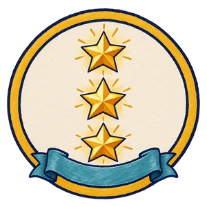
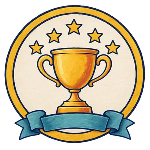
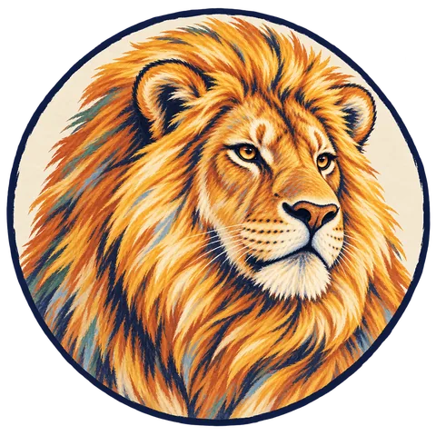
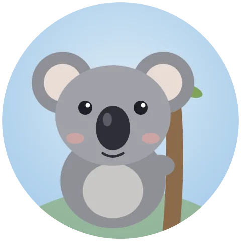

Eine immersive Lernlandkarte mit KI-Coach: Jedes Kind übt, was es wirklich braucht.
Adaptive Grammatikübungen & individuelles Schreibfeedback – sofort, für jedes Kind.
Am 05.10. startete die Reise mit einem Check-in – einem Pre-Test. So wird sichtbar, wie viel jedes Kind dazugelernt hat.
Gestern gemeinsam, heute allein auf Papier – bevor Sie kamen. Der KI-Coach kommt erst jetzt dazu.
Send a photo of your worksheet to the Outback coach.
(Schick ein Foto von deinem Arbeitsblatt an den Coach.)
Jedes Kind an seiner Station – im eigenen Tempo, auf seinem Niveau.
Achten Sie weniger darauf, dass KI eingesetzt wird. Achten Sie darauf, wie unterschiedlich der Coach reagiert – je nachdem, was ein Kind schon kann.
🧭 Ihre Lotsin, Ihr Lotse zeigt Ihnen den eigenen Weg.
Hinter jedem Coach stehen pädagogische Entscheidungen – keine Zauberei.
Wir haben nicht einfach Prompts geschrieben. Wir haben pädagogische Entscheidungen in eine verlässliche Agentenlogik übersetzt.
Eine immersive Lernlandkarte – jedes Kind geht seinen eigenen Weg.
Jedes Kind macht seine eigenen Fehler – und hat seine eigenen Stärken.
Und trotzdem bekommen im normalen Unterricht alle die gleichen Arbeitsblätter. Zu leicht für den einen, zu schwer für den anderen.
Wer sich meldet, ist nicht die Klasse. Es sind oft dieselben Hände – die Starken prägen das Bild der Stunde.
Die anderen bleiben still. Ihre Schwierigkeiten bleiben unsichtbar – ein blinder Fleck.
Jedes Kind braucht eine Rückmeldung zu seinen Antworten – am besten sofort.
Doch bis alle Blätter korrigiert sind, ist das Thema längst vorbei. Eine persönliche Rückmeldung für jedes Kind, direkt in der Stunde?
Unmöglich.Ehrlich gesagt: Das allein motiviert kaum ein Kind.
Die KI aus dem KIMADU-Projekt ist sicher und datenschutzkonform. Aber neben den Apps, die die Kinder kennen, wirkt sie nüchtern – und lädt kaum ein.
Motivation


Ersetzt die KI den Unterricht? Wer erklärt, wer fragt nach, wer entscheidet?
Lagerfeuer = gemeinsamer Unterricht ohne KI. Plenum und Instruktion bleiben zentral.
Fehler, Lernstände, Texte – das sind sensible Daten. Wer kann sehen, wem sie gehören?

Heute: Englisch, Unit 1, Australien.
Morgen: jedes Thema, jedes Fach.
Vertretungsstunden werden oft zu verlorenen Stunden – weil niemand Material vorbereiten kann.
Ein persönlicher KI-Agent, der jedes Kind von Klasse 7 bis 10 begleitet – und es mit jedem Schritt besser kennt.
Vom individuellen Lernweg zur individuellen Zukunftsperspektive.
